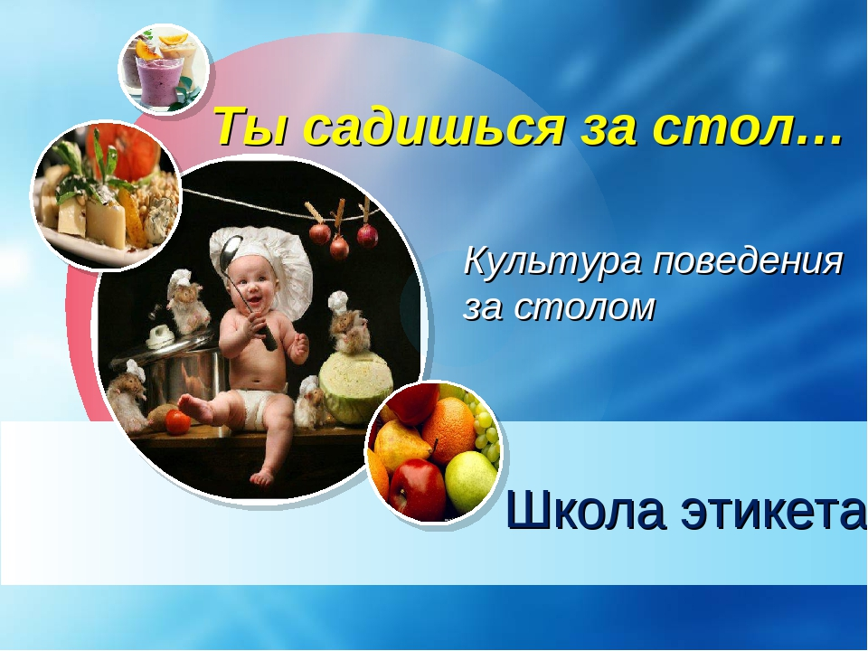

Получив приглашение на званый обед (или ужин), ни в коем случае не опаздывайте. Однако приходить за час до назначенного времени так же неприлично, как и опаздывать.
За стол следует садиться только после приглашения со стороны хозяина (или хозяйки). Мужчины должны помочь присесть дамам и только после этого садиться за стол сами. Сопровождая свою даму к столу, мужчина должен предложить ей правую руку.
Во время застолья мужчина обязан ухаживать за дамами, сидящими рядом с ним. В этом случае не имеет значения, знакомы вы или нет. В первую очередь ваше внимание должно сосредоточиться на соседке, сидящей от вас по правую руку.
Знакомиться за столом неприлично. Знакомство должно происходить до того, как гости усядутся за стол.
Во время обеда не следует сидеть слишком близко или слишком далеко от стола. Держите себя прямо, не нагибаясь над столом.
Салфетки во время еды блюд с соусом раскладывают на коленях. Ни в коем случае не вздумайте затыкать их за воротник. Используют салфетки не для вытирания лица, ими лишь слегка вытирают губы. При выходе из-за стола салфетку следует оставить рядом с тарелкой. Некрасиво и неприлично складывать грязную салфетку вчетверо и бросать ее на тарелку.
Блюда и напитки в первую очередь предлагают дамам. Неприлично брать с общего блюда лучший кусок для себя. Следует брать тот кусок, который к вам ближе.
Хлеб берите не вилкой, а рукой. Его следует отламывать рукой, а не откусывать от целого куска, и класть возле себя на специальную тарелочку, поставленную для хлеба. Если такой тарелки нет, то положите его на салфетку рядом со своей тарелкой. Намазывая хлеб маслом, держите его на тарелке (или на салфетке). Хлеб нельзя также крошить в суп, макать в соус и вытирать с его помощью тарелку с остатками еды.
Если вы хотите взять какое-нибудь блюдо, нельзя тянуться руками через тарелку другого гостя. Следует извиниться за беспокойство и вежливо попросить соседа передать вам блюдо. После того как вы положили себе на тарелку порцию, передайте блюдо с тем, чтобы его поставили на место. При этом следует снова извиниться за беспокойство и поблагодарить гостя, который вам помог.
Супы едят не с конца ложки, а с середины. Во время еды не дуйте в тарелку или на ложку с супом (процесс остывания этим не ускоришь).
Неприлично просить вторую порцию какого-нибудь блюда (только если хозяин настойчиво предложит вам сам). Не стремитесь доесть все без остатка, что только есть на вашей тарелке. Не набивайте рот большим количеством пищи: есть следует понемногу, неторопливо, тщательно прожевывая.
Во время еды локти должны быть прижаты к бокам. Не расставляйте их в стороны, тем самым вы создаете неудобства соседям (представьте, что подумает о вас красивая женщина (или мужчина), сидящая (сидящий) рядом). Также крайне некрасиво вы будете выглядеть со стороны, если поставите локти на стол. Запомните, что во время еды лишь кисти ваших рук могут касаться края стола.
Пользуясь приборами, вилку держите в левой руке, а нож в правой. Нельзя есть с конца ножа либо подносить нож ко рту. Помимо опасности порезаться это еще и крайне неприлично. На вилку берите столько еды, сколько на нее помещается без труда. После еды приборы кладут на тарелку параллельно друг другу, ручками в правую сторону.
На официальных приемах чокаться не принято (в знак приветствия приподнимается рука с бокалом). Бокалами с пивом тоже не чокаются.
Не поднимайте слишком высоко бокал или рюмку (особенно это любят делать во время произнесения тостов): вы можете нечаянно пролить напиток на скатерть или на соседа. Запивая еду напитком, сначала протрите губы салфеткой, чтобы не оставлять жирных пятен на рюмке или стакане. Прежде чем доливать из бутылки себе, предложите напиток окружающим.
Сыр накладывают на тарелку вилкой, а едят руками.
Мясные блюда едят при помощи вилки и ножа. Сосиски, сардельки, нарезанные ветчину, буженину, колбасы и др. накладывают себе на тарелку с помощью ножа и вилки.
Дичь едят ножом и вилкой, а не руками. Если вам не удалось отделить от костей все мясо, оставьте его недоеденным.
Не используйте нож для разрезания блюда, которое можно разделить и взять при помощи одной вилки. Даже после того как вы разрезали блюдо и едите с помощью вилки, нож все равно должен оставаться у вас в руках. Пальцы держите на ручке ножа, а не на лезвии. Мясо режут перпендикулярно волокнам, а птицу и дичь - с учетом их строения.
Рыбу едят с помощью специального рыбного ножа в виде лопаточки и вилкой либо с помощью двух вилок. Нож следует держать в правой руке, а вилку - в левой. Специальным ножом отделяют кости. Если вы едите рыбу с помощью двух вилок, то кости отделяются той вилкой, которая находится у вас в правой руке. Вилкой в левой руке нужно отправлять кусочки рыбы в рот. Если в рот все же попали кости, то вам следует аккуратно достать их на вилку, а затем выложить на тарелку.
Омлеты едят при помощи вилки, которая должна находиться в правой руке.
Отварной картофель, рис, овощи накладывают при помощи общей ложки, которая должна находиться в блюде. Разделяют картофель вилкой, а не ножом. Соусом следует поливать только мясо, а не картофель вместе с ним. Редис держат руками, перед тем как есть, обмакивают его в соль. Соль следует предварительно высыпать маленькой горочкой (а не половину солонки) на край тарелки.
Паштеты едят в основном с помощью вилки, но можно и ложкой. Спагетти накручивают на вилку таким образом, чтобы они не свисали, а затем быстро отправляют в рот.
Устрицы употребляют при помощи специальной вилки. Придерживая обе половинки устрицы большим и средним пальцами, острым ребром вилки отделяют устрицу от раковины. Затем поливают ее лимонным соком, левой рукой подносят ко рту и бесшумно высасывают устрицу из раковины. Можно также отправлять устрицу в рот и при помощи вилки.
Раков едят так. Левой рукой следует отделить клешни и лапки, поднести их ко рту и высосать (опять же бесшумно) мясо. Затем положить рака на спинку, отделить заднюю часть, из которой вилкой достать мясо. Похожим способом едят также омаров и лангустов. Если их подали на общем блюде, руками отламывайте части и накладывайте себе на тарелку. Мясо достаньте с помощью вилки.
Нельзя выплевывать на тарелку кости, косточки и т. п. Их следует аккуратно и незаметно для окружающих извлечь изо рта на ложку (вилку) и затем только переложить на тарелку.
Берите ближний к вам фрукт (нельзя ни в коем случае выбирать, что получше), с помощью ножа и вилки разрежьте на дольки и удалите сердцевину (если это необходимо). Есть фрукты можно руками. Землянику, малину, чернику, клубнику накладывают общей большой ложкой, а едят маленькой ложечкой. Бананы очищают руками, нарезают дольками и едят вилкой и фруктовым ножом. Абрикосы, персики и сливы предварительно разрезают на две части и достают косточки. Мандарин разделывают руками, а у апельсина предварительно надрезают ножом кожицу. Арбуз и дыню едят при помощи десертных ножа и вилки.
Сахар-рафинад берут с помощью щипцов для сахара. Пирожки, вафли и т. п. едят руками. А блинчики - ножом и вилкой.
Во время обеда крайне неприлично играть со столовыми приборами, посудой и т. д. Они предназначены не для этого.
Подавая соседу нож, держите его за ручку, но лезвием к себе.
Никогда не поворачивайтесь к соседу спиной. Также неприлично вести разговор с другим человеком через соседа: следует дождаться окончания обеда. Никогда не разговаривайте с набитым ртом.
Не сидите за столом, откинувшись на спинку стула или развалившись на стуле. Не пользуйтесь за столом зубочисткой - это выглядит крайне некрасиво.
Если вы случайно уронили ложку или вилку, пролили немного вина на стол, не надо привлекать к этому всеобщее внимание. Не просите прощения у соседей и хозяина, а просто осторожно и незаметно попросите новый прибор. Тактичный и интеллигентный сосед также не должен обращать внимание на подобное.
Гостям не следует делать критических замечаний относительно качества подаваемых блюд. Но и непрерывно нахваливать кулинарные способности хозяйки не стоит - это утомляет.
Если вы отказываетесь от какого-либо блюда, не объясняйте это тем, что вы его не любите или оно вам вредно. Вообще, не следует за столом говорить о своих болезнях и недугах.
Когда подается кофе или чай, не просите вторую порцию в то время, как кто-то из присутствующих не получил еще первой. Размешивая в чашке сахар, не позвякивайте ложкой. Размешав, положите ложечку на блюдце, не оставляйте ее в чашке.
По окончании обеда первыми из-за стола поднимаются женщины, за ними - мужчины. Мужчина должен стоять до тех пор, пока дамы не вышли из комнаты, только после этого он может снова присесть и закурить с разрешения хозяев..
Крайне неприлично читать за столом газеты или корреспонденцию.
Источник: http://www.100etiket2.ru/5.php